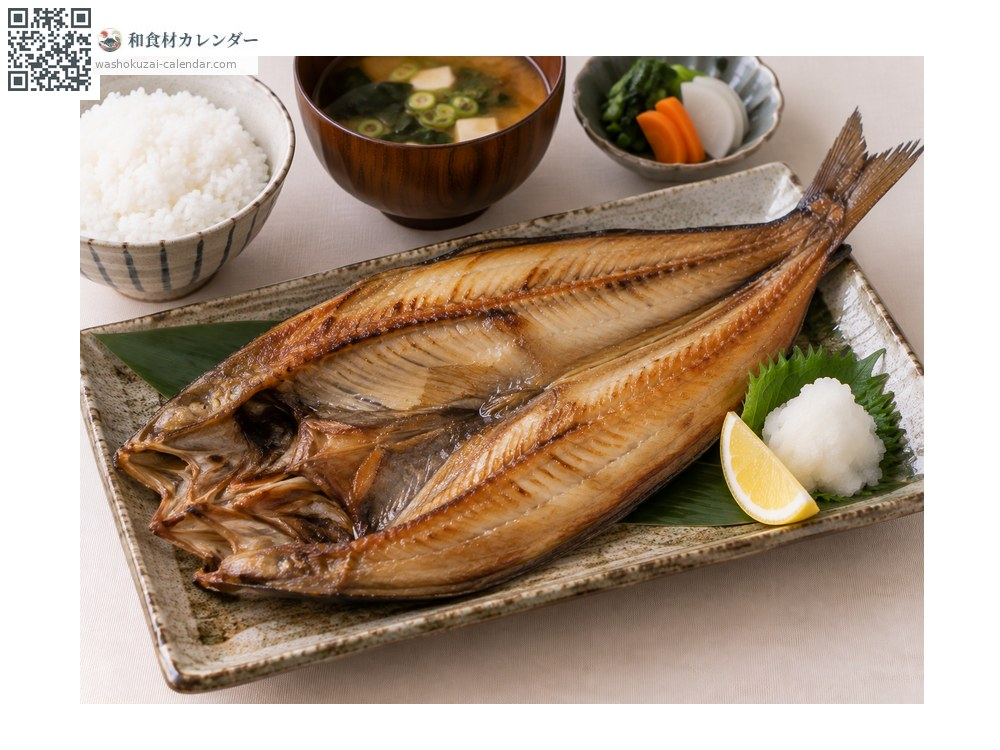
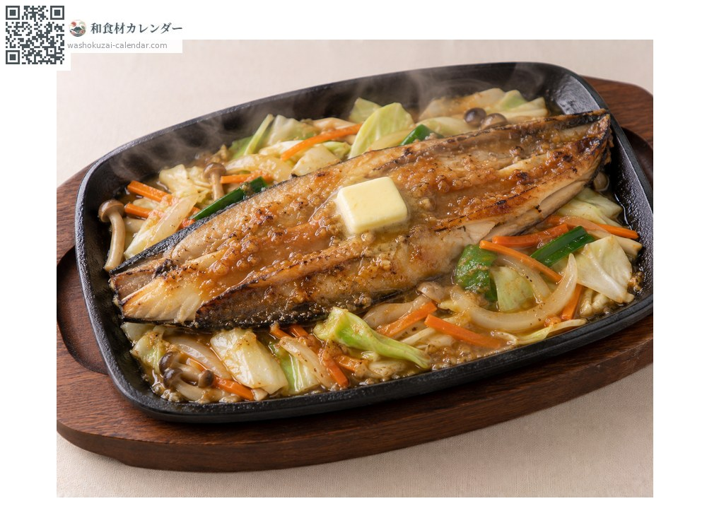
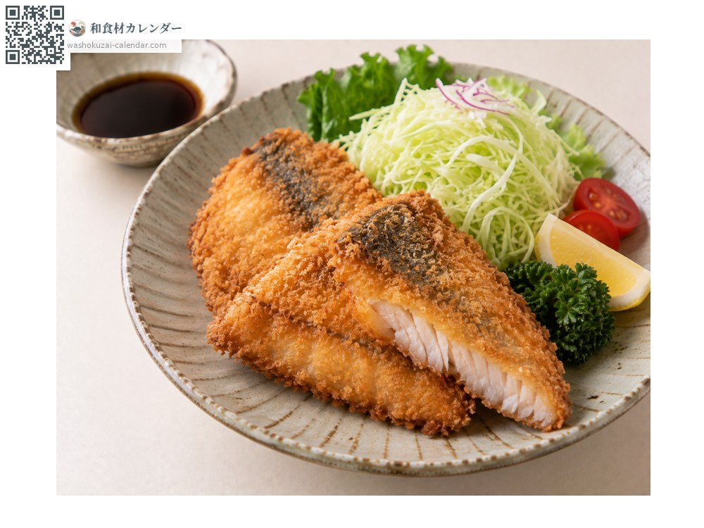
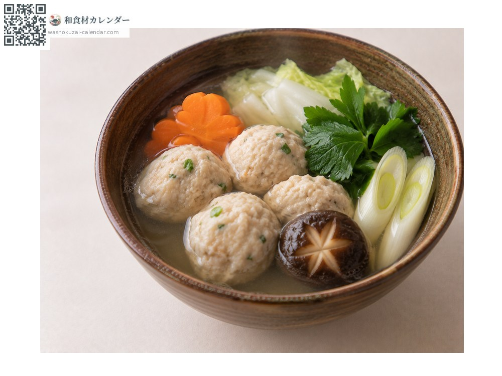

海鲜
远东多线鱼
ホッケ ほっけ hokke
别名hokke
应季时期为5月、6月、7月

应季时期
1月
2月
3月
4月
5月
6月
7月
8月
9月
10月
11月
12月
应季有供应
烹饪方法

对半剖开日晒
最经典的做法。烤过配白萝卜泥。

味噌铁板烧鱼配蔬菜
与蔬菜、味噌一同铁板蒸烤。

裹面包糠油炸
清淡的鱼肉很搭。

手打鱼丸
剁碎捏成丸子放进汤里。
挑选方法
一夜干要挑肉厚、表面不过度干燥的。鲜鱼要眼睛清澈、鱼身紧实。
保存方法
鲜鱼坏得极快，当天食用。一夜干可冷冻保存。
主要产地
小知识
因为鲜度掉得太快，产地以外几乎只流通一夜干。北海道罗臼的最有名。